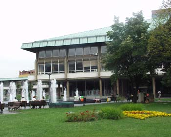

Kako da kultura osvoji internet
Sinoć se na skupu o značaju portala za kulturu, održanom u Gete institutu, skupila vrlo šarena ekipa.
Organizatori su pozvali kao uvodničare Milenu Dragićević-Šešić, profesorku FDU, Goricu Mojović, zamenicu gradonačelnika Beograda, Nebojšu Bradića, direktora BDP, Dinka Tucakovića, direktora Kinoteke, umetnika Zorana Popovića, i Anđelku Cvijić, novinarku kulturne rubrike Politike. Još su tu bili predstavnici portala za kulturu iz Nemačke (Berlina), Hrvatske, Slovenije, Bosne i Makedonije, kao i predstavnici zainteresovane javnosti koji su takođe pozvani da daju svoj aktivan doprinos, kao što se to kaže na takvim mestima. Tako su tu bili ljudi iz Doma omladine, Remonta, Kontra magazina, Pop Boks magazina, srpske Wikipedie, onlajn časopisa Slobodna kultura, Narodne bilioteke, niške moderne galerije, medijskih organizacija itd. Bio je i Milorad Pavić, koga je nekoliko njih pomenulo u pozitivnom kontekstu jer je najnoviju knjigu objavio na netu, ako sam dobro razumela.
Evo ukratko šta je ko pričao:
Milena Dragićević-Šešić je predstavila rezultate međunarodnog istraživanja o kulturnim portalima. Kulturni portali su najpre nastali u Kanadi, a poseban značaj imali su u povezivanju sa malim i izolovanim sredinama. Kulturnih portala najviše je u Zapadnoj Evropi, SAD i Australiji, u proseku imaju po četvoro zaposlenih, većina je javna (public), a samo tri posto funkcioniše profitno, dominantni jezik komunikacije je engleski (75 posto), a polovina objavljuje na dva jezika. Zamerka je da im često nedostaje analitički i refleksivni pristup i partnersko povezivanje.
Njoj su tokom diskusije zamerili/protivrečili da zanemaruje da je već sada dobar deo internet produkcije na jezicima velikih azijskih zemalja, što sigurno jeste istina, ali ona je govorila specifično o portalima za kulturu, a ne ukupnom web stvaralaštvu. Neke od primedbi su se odnosile i na to da nije neophodno da kulturni portali predstavljaju neku državnu kulturnu strategiju, tako je naveden primer Nemačke, a neko je pomenuo i to da ekspanzija u širinu nije uvek neophodna, jer su često portali namenjeni baš lokalnim sredinama.
Gorica Mojović je govorila o razvoju informacione infrastrukture u kulturnim ustanovama grada Beograda u poslednjih pet godina. Rečeno je da je u oko trideset institucija kulture čiji je osnivač Grad 2001. bilo oko trideset kompjutera, a sada ih je oko 600.
Glavna zamerka upućena njoj i politici Grada je da nije bilo nikakvog pomena o tome ša je zapravo kulturna politika Beograda, posebno u online sferi.
Nebojša Bradić se osvrnuo na ulogu koju portali za kulturu mogu imati u prevazilaženju provincijalizacije zemlje, otvarajući pristup sredinama i inicijativama koje ne mogu da dođu do izražaja na drugi način. U zemljama kao što je Srbija, gde je većina događaja i projekata skoncentrisana na Beograd, to može da bude vrlo korisno.
Dinko Tucaković govorio je o tome da portali mogu da budu idealno mesto za prezentaciju digitalizovanog materijala koji imaju kinoteke, a Zoran Popović misli da Internet ipak ima malu prosunu moć za kvalitativne promene.
Anđelka Cvijić rekla je da klasični mediji i internet portali nisu konkurenti, već partneri, i sugerisala tvorcima portala da pruže osim informacija, koje su primarne, i intervjue, prikaze, priče..
Ova njena opaska je kritikovana od strane predstavnika online magazina kao što su Kontra i Popboks, koji su govorili o tome da te autorske forme itekako postoje u njihovim publikacijama, te da one upravo nedostaju medijima kao što je Politika. Tu se razvila mala diskusija na temu šta jeste a šta nije profesionalno novinarstvo, i kako ono izgleda, i gde ga ima.
Oni koji se bave izdavaštvom na internetu kritikovali su činjenicu da se internet u Srbiji još uvek ne shvata ozbiljno, zatim da se njihovi sadržaji često prekrajaju i plasiraju u tradicionalnim medijima, kao i to da oglašivači nisu spremni da plate za reklamu na internetu.
Najzanimljivije u celom događaju je da je trajao tri sata bez prekida, da je bilo puno žara, posebno od ljudi iz online sveta, puno učesnika i puno aktivnih učesnika, štaviše. Izgleda da internet stvarno može da uzburka duhove, čak i ovde, u maglovito veče.
p.s. Kačim sliku Narodne biblioteke kao neke vrste zemaljskog kulturnog portala
Komentari
etotako | 29.11.06 23:03
La Lara | 30.11.06 11:22
nije ni cudo da su se 'online'ovci najvise bunili, oni znaju realno stanje, ne treba im analiza
 RSS feed
RSS feed
 sadržaji se objavljuju pod
sadržaji se objavljuju pod
e odlicno! ne uspevam da nadjem taj online roman (e-book, ili kako to vec zovu) milorada pavica, bas bih da citam.